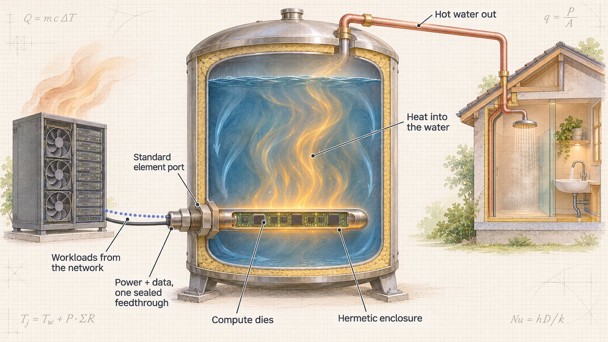
The Heating Element That Computes
An immersion computing module for the standard water-heater element port: design, load matching and a first thermal model
Abstract
A resistive heating element and a computer chip do the same thing with electricity: both turn almost all of it into heat. A data center pays to throw that heat away. A building pays to make it. This paper describes an immersion computing module that closes the gap at the smallest possible scale. The module is packaged to the dimensions, pressure rating and wiring of an ordinary screw-in water-heater element. It seals into the existing element port of an installed tank, and its heat source is a set of compute dies running work received over a network.
We make four contributions. First, we treat the standardized element port as an engineering interface and state the constraints it imposes. Second, we show that the power such a port allows is close to the average water-heating load of a household, so the module can run most of the day where a conventional element runs about a tenth of it. Third, we give a lumped thermal model of the heat path from die to water. The model finds that the water side is not the bottleneck; the coupling between the dies and the enclosure wall is. A still dielectric liquid alone supports only tens of watts in a one-inch enclosure, while conduction coupling supports roughly 220 to 720 W, and a flexible conduit raises the figure in proportion to its length. Fourth, we describe the hybrid controller, the serviceable and extended variants, and a building-scale system.
No prototype has been measured. Every number in the analysis comes from a published model with stated assumptions, and the paper ends with the tests that would confirm or refute it.
Keywords: waste heat recovery, data center heat reuse, immersion cooling, domestic hot water, distributed computing, heat transfer, load matching, building decarbonization
- 1. Introduction
- 2. Related work
- 3. The element port as an interface
- 4. Module design
- 5. Load matching
- 6. Thermal model
- 7. Hybrid operation and control
- 8. More capacity through the same port
- 9. Building-scale systems
- 10. Safety and compliance
- 11. The economics in one equation
- 12. Limitations and evaluation plan
- 13. Conclusion
- References
1. Introduction
Data centers in the United States used about 4.4% of the country's electricity in 2023, and the share is projected to reach between 6.7% and 12% by 2028 [1]. Nearly every watt-hour of it ends as low-temperature heat, and a large further amount of energy and capital is spent on equipment whose only job is to reject that heat to the air [2]. In the same cities, water heating accounts for close to a fifth of the energy used in a home [3], much of it supplied by a resistive element that turns electricity into heat and nothing else.
The mismatch is old and well known. The usual remedies move heat from where the computers are to where the heat is wanted, through district heating networks [4], or move the computers to where the heat is wanted, as in the "data furnace" proposal [5] and the commercial heaters and boilers that followed it. Each remedy has asked the building for something: a new appliance in place of a working one, a heat exchanger and new plumbing, or a unit strapped to the outside of a tank.
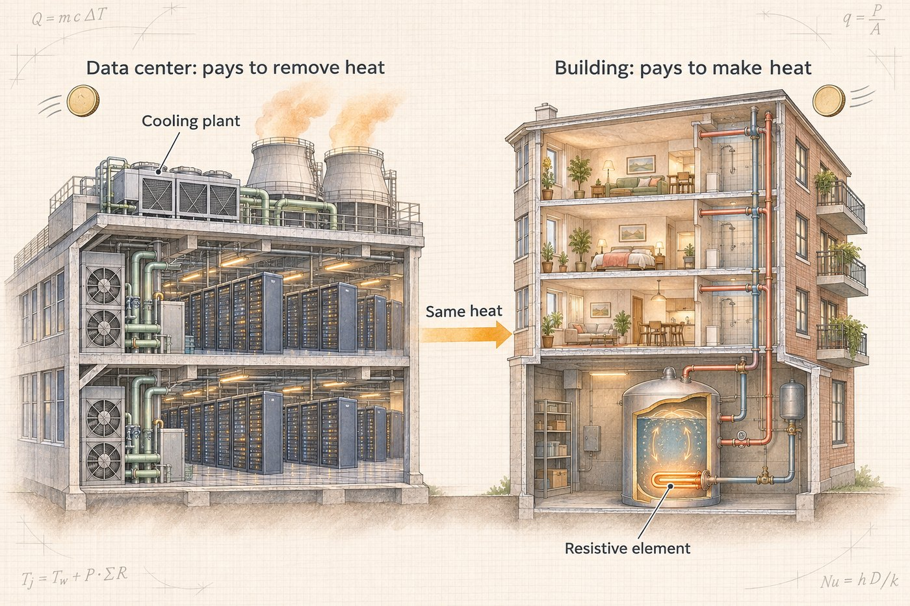
This paper starts from a different observation. Almost every electric storage water heater already has an opening made for exactly one purpose: to hold an electrically powered heat source, sealed, in direct contact with the water. It is the heating-element port. Elements are replaced through it as routine maintenance. The port has a standard thread or flange, a known pressure rating, a dedicated circuit and a thermostat already wired to it.
The module described here, developed under the name ThermalCore, is a computer packaged as a heating element. It goes where the element went. The questions we address are whether that is physically reasonable, how much power such a module can carry, and what it takes for the water heater to behave exactly as it did before.
2. Related work
Heat reuse at the data center. Reviews of data center cooling [2] describe the low grade of the heat available, typically 30 to 60 °C for liquid-cooled equipment, and the options for upgrading it. Studies of district heating integration [4] show the heat is useful where a network exists and the data center sits close to it. Both conditions are uncommon outside a few countries.
Computing where heat is wanted. Liu et al. [5] proposed placing servers in homes and offices as "data furnaces". Commercial products followed: electric room heaters and boilers built around processors, and more recently purpose-built water heaters whose heat source is a set of mining chips. These are complete appliances. Installing one means removing a serviceable heater.
Compute in or on a hot water system. Several designs bring processors to an existing hot-water system. One family places processors submerged in a dielectric liquid and transfers their heat to domestic hot water or pool water through integrated, wrap-around or retrofit arrangements, with a controller tied to hot-water demand [6]. Another places a gastight dielectric-filled vessel holding compute boards inside a potable water tank [7]. A third bonds a compute unit to the outside of an existing hot-water cylinder and throttles work by temperature [8]. In data centers, sealed dielectric-filled modules that conduct heat through the module wall to a surrounding liquid are established practice [9].
Elements that fit the port. Independently of computing, the heating-element port has been used for unconventional elements: screw-in retrofit elements with their own electronics and power source [10], and flexible spiral elements that pass through the port and expand inside the tank [11]. These are resistive.
The module in this paper sits at the intersection. It takes the heat source of the first group and the mounting of the second: compute dies inside a pressure-rated enclosure that passes through, and seals in, the standard element port, with power and data through a single sealed feedthrough.
| Approach | Keeps the existing tank | New plumbing | Heat source location | Mounting |
|---|---|---|---|---|
| Purpose-built computing water heater | No | Replacement install | Inside a new appliance | Built in |
| External dielectric loop and heat exchanger [6] | Sometimes | Yes | Outside the tank | Skid or wrap |
| Sealed vessel placed inside a tank [7] | Modified or new tank | No | In the water | Access opening |
| Unit bonded to the tank exterior [8] | Yes | No | Outside the wall and insulation | Clamp-on |
| Element-port module (this paper) | Yes | No | In the water | Standard element port |
3. The element port as an interface
A design that must fit an opening it did not choose is defined by that opening. For a residential electric storage water heater in North America the port sets five constraints.
Aperture. The common screw-in element uses a nominal one-inch NPT thread. Whatever enters the tank must pass a bore of roughly one inch. Flanged four-bolt openings, and the 1¼ to 2½ inch bosses of commercial vessels, are larger but equally fixed.
Depth. A rigid body can extend only as far as the tank interior allows, about 8 to 14 inches in a residential tank, and must stay clear of the dip tube, the anode rod and any other element.
Pressure. The enclosure is part of a potable pressure vessel. It must hold against a working pressure of at least about 150 psi, and materials in contact with the water must be suitable for potable use.
Electrical supply. The element position is served by a dedicated circuit, commonly 240 V at 30 A, switched by a thermostat, with a manual-reset high-limit cutoff above it.
Behaviour. The water heater's thermostat expects to switch a load on and off. Whatever sits in the port has to accept that.
The aperture and depth together fix the wetted surface. For a cylinder of outer diameter D and immersed length L, with a ceiling on surface watt density q″max, the power is bounded by
A 25.4 mm by 30 cm enclosure has 239 cm² (37 in²) of surface. At a ceiling of 40 W/in², well under the 150 to 350 W/in² of a conventional element sheath, the bound is about 1,500 W. Section 6 shows that chip temperature, not watt density, sets a tighter limit.
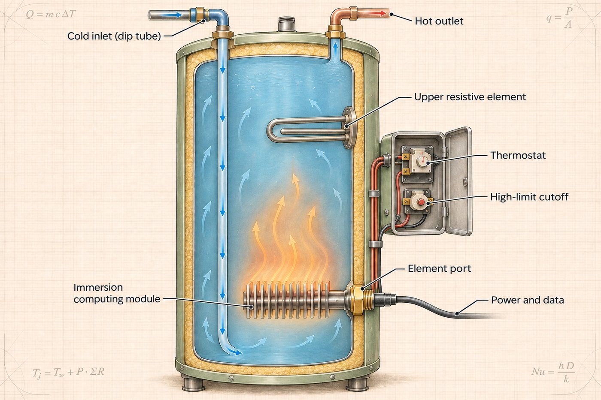
4. Module design
The module has five parts (Figure 3).
Mounting fitting. A threaded plug, or a bolt-on flange, that seals against the existing port in place of the removed element, with the same gasket or thread sealant.
Hermetic enclosure. A pressure-rated tube of stainless steel, copper or copper alloy, sized to pass through the port and extending from the fitting into the water. It may carry external fins to increase wetted area.
Compute dies. One or more integrated circuits on boards inside the enclosure: ASICs, GPUs, CPUs, systems-on-chip or FPGAs. They are thermally coupled to the enclosure wall through a dielectric liquid, a thermally conductive potting compound, heat spreaders clamped to the wall, heat pipes, or a combination.
Sealed feedthrough. One penetration through the fitting carries the power conductors and the data pathway. Data may travel by power-line communication on the power conductors themselves, by a wired pair or fibre, or by a wireless transceiver on the dry side of the fitting.
Controller and sensors. A module controller supervises the workloads, reads a temperature sensor and a moisture sensor, obeys the thermostat interlock, and reports telemetry.
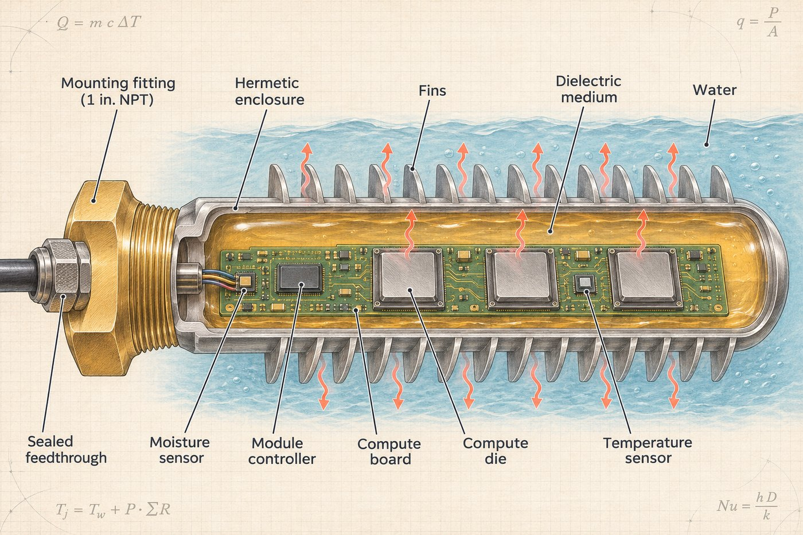
Installation. The procedure is the one a plumber already uses to change an element: switch off the supply, drain below the port, remove the old element, fit the module, reconnect the thermostat wiring to the module's element-equivalent terminals, and connect data if it is not carried on the power conductors. No pipe is cut.
Workloads. Because the thermostat will interrupt the module, suitable work is latency-tolerant and can be checkpointed: batch inference, rendering, transcoding, scientific computation and similar jobs. The controller checkpoints and resumes work as the interlock and the temperature limits change the power available. The module's function as a heater does not depend on any particular commercial arrangement for the work.
5. Load matching
A conventional lower element is rated at 4,500 W so that a tank recovers quickly after a heavy draw. It is sized for the peak. The energy it delivers over a day is modest. Heating a daily draw of volume V through a temperature rise ΔT, with standby loss Es, takes
For 240 litres a day raised by 42 K this is 11.7 kWh, plus about 1 kWh of standby loss. Spread over 24 hours, that is an average of roughly 500 W. A heat source of power P serving a daily demand E runs for a fraction of the day
and, if it cannot keep up, supplies a share of the day's heat
Table 2 evaluates both. A 4,500 W element is on for 6 to 14% of the day. A 500 W module serving the same demand is on for 50 to 100% of it, and supplies all of the heat up to 12 kWh a day. Above that, the remainder comes from the auxiliary element of Section 7 or from the tank's other element.
| Daily demand E | 6 kWh | 9 kWh | 12 kWh | 15 kWh |
|---|---|---|---|---|
| Duty of a 4,500 W element | 6% | 8% | 11% | 14% |
| Duty of a 500 W module carrying the load | 50% | 75% | 100% | 100% |
| Share supplied by a 300 W module | 100% | 80% | 60% | 48% |
| Share supplied by a 500 W module | 100% | 100% | 100% | 80% |
| Share supplied by an 800 W module | 100% | 100% | 100% | 100% |
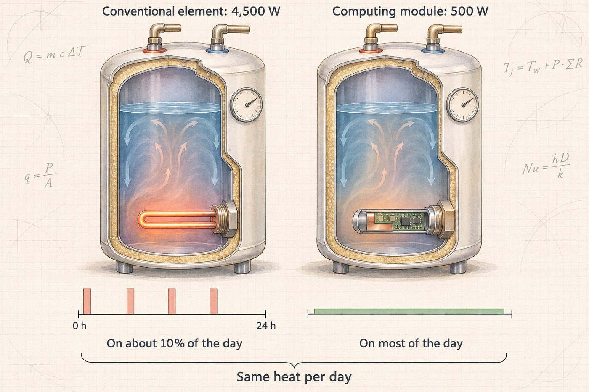
This is the central point of the design. Computing hardware earns only while it runs, so a heat source that is idle 90% of the day is a poor host for it. The port forces the module's power down by an order of magnitude, and that happens to put it at the household's average load, where it can run nearly all the time. A limit that looks like a handicap turns out to be the match.
The cost is recovery time. A 500 W source takes about 16 hours to warm a cold 189-litre (50-gallon) tank to 50 °C with no draw, against under two hours for 4,500 W (Table 3). A module on its own would give a poor shower after a heavy draw. That is why the design pairs it with a resistive source.
| Continuous power | 300 W | 500 W | 800 W | 1,500 W | 4,500 W |
|---|---|---|---|---|---|
| Time to 50 °C | 26.5 h | 15.6 h | 9.6 h | 5.1 h | 1.7 h |
| Time to 60 °C | 34.8 h | 20.3 h | 12.5 h | 6.6 h | 2.2 h |
6. Thermal model
The question that decides whether the module is practical is how hot the dies run. Tank water at a normal setpoint is 45 to 65 °C. Compute dies are typically limited to junction temperatures of about 90 to 110 °C. The whole heat path has to fit in the 30 to 60 K between them.
6.1 The heat path
We model the path as thermal resistances in series (Figure 5). For total module power P and power per die Pd, the junction temperature is
where Tw is the tank water temperature, Rfilm the water-side convection resistance, Rwall the conduction resistance of the enclosure wall, Rc the coupling resistance between the dies and the inner wall, and Rjc the junction-to-case resistance of one die.
Here A = πDoL, φ is the area gain from fins, and h is the water-side coefficient. In still water we take h from the Churchill and Chu correlation for free convection from a horizontal cylinder [12]; with an impeller, from the Churchill and Bernstein correlation for cross-flow [13]. Solving Eq. (5) for the largest power that keeps the junction under its limit gives
which is solved by iteration because h depends on the wall temperature.
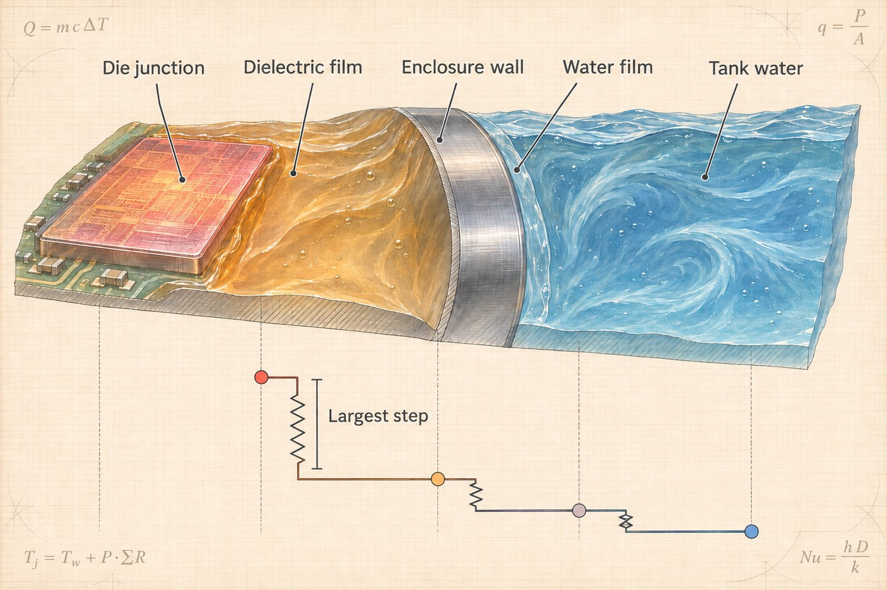
6.2 Assumptions
The reference module is a 316L stainless tube, 25.4 mm outer diameter, 0.89 mm wall, 30 cm immersed, lying horizontally. Dies dissipate 15 W each with Rjc = 0.8 K/W. Three coupling options are compared:
Still dielectric liquid. Dies and their heat sinks sit in a liquid such as mineral oil. Heat crosses two free-convection films, sink to liquid and liquid to wall, each at 150 W/m²K, with 0.13 m² of sink area per metre of tube.
Circulated dielectric liquid. The same, with the liquid gently moved, at 600 W/m²K.
Conduction. Dies mounted on a metal spreader pressed or potted against the wall, with a contact conductance of 3,000 W/m²K over half of the inner wall.
These coefficients are estimates within the ranges given in standard references [14]. They are not measurements, and Section 12 lists them among the things a prototype must establish.
6.3 Results
The water side is not the limit. In still water at 60 °C the model gives h of about 950 to 1,250 W/m²K. A bare enclosure carrying 500 W runs 19 K above the tank. Fins that multiply the wetted area by 2.5 bring that to 10 K, and a flow of 0.3 m/s brings it to 6 K. The wall itself adds about 1 K. The surface watt density at 500 W is 13.5 W/in², a small fraction of a conventional element's.
The coupling is. At 500 W, with a finned enclosure in a 60 °C tank, the temperature step across the coupling is 235 K for still liquid, 59 K for circulated liquid and 15 K for conduction. Only the last leaves the junction near its limit. A narrow tube simply does not have room for the heat-sink area that passive oil cooling needs.
| Coupling | Exterior | Tank 50 °C, Tj ≤ 90 °C | Tank 60 °C, Tj ≤ 90 °C | Tank 60 °C, Tj ≤ 105 °C |
|---|---|---|---|---|
| Still dielectric liquid | Bare, still water | 50 | 30 | 60 |
| Fins ×2.5 | 50 | 30 | 60 | |
| Impeller, 0.3 m/s | 50 | 30 | 60 | |
| Circulated dielectric liquid | Bare, still water | 150 | 100 | 190 |
| Fins ×2.5 | 190 | 120 | 220 | |
| Impeller, 0.3 m/s | 200 | 130 | 240 | |
| Conduction (spreader or potting) | Bare, still water | 360 | 220 | 460 |
| Fins ×2.5 | 520 | 330 | 650 | |
| Impeller, 0.3 m/s | 600 | 390 | 720 |
Three conclusions follow.
First, a rigid one-inch module is a device of a few hundred watts. With conduction coupling the model gives 220 to 720 W across the cases in Table 4, which brackets the household average of Section 5. The junction limit binds long before the watt-density ceiling of Eq. (1).
Second, the tank setpoint matters a great deal. Dropping the water from 60 to 50 °C raises the allowable power by roughly half. A module is happiest in the lower, cooler part of a stratified tank, which is where the lower element port is.
Third, the design effort belongs on the inside of the tube. A dielectric fill is useful for electrical isolation and for evening out temperature, but in this geometry it cannot be the main heat path. Fins and impellers on the water side help only once the coupling is good; with still liquid they change nothing.
The model is short and is published with this paper as model.py, so the assumptions can be changed and the tables regenerated.
7. Hybrid operation and control
A module that only computes leaves three gaps: it cannot heat when it has no work or no network, it cannot recover a tank quickly, and it cannot easily raise water above the temperature its dies tolerate. The hybrid module fills all three by carrying an auxiliary resistive element on the same fitting, powered through the same feedthrough (Figure 6).
The controller meets thermal demand by computation first. It energizes the auxiliary element on any of three conditions: workloads are unavailable; the demand exceeds what the dies can deliver; or the commanded water temperature exceeds what the dies can reach. The third case includes a periodic sanitization cycle, in which computation is reduced and the resistive element raises the water to at least about 60 °C for control of Legionella, in line with guidance for building water systems [15].
The two sources share one supply circuit. The controller apportions it so that
at all times. The division of labour is by character and not merely redundancy. Computation supplies the continuous base load, where each kilowatt-hour does two jobs. Resistance supplies the short, intense demands that computation cannot.
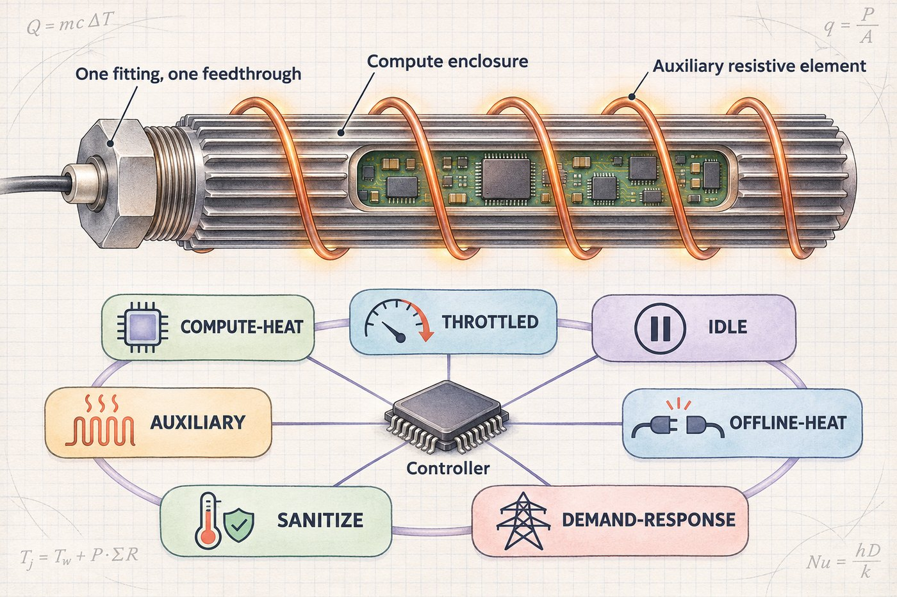
| Mode | Entered when | Behaviour |
|---|---|---|
| COMPUTE-HEAT | Thermostat calls for heat, temperatures within limits | Workloads run at full available power; all heat goes to the water |
| THROTTLED | Water nears setpoint, or enclosure nears its limit | Power reduced in steps by scheduling, clock and voltage scaling, or checkpoint and suspend |
| IDLE | Thermostat opens | Computation suspended or held at a housekeeping level |
| AUXILIARY | No work, demand above compute capacity, or setpoint above compute temperature | Resistive element energized |
| OFFLINE-HEAT | Data connection lost | Module heats resistively; the appliance works with no network |
| SANITIZE | Periodic schedule | Resistive element raises water above a pathogen-control temperature |
| DEMAND-RESPONSE | External grid signal (optional) | Compute draw reduced; stored heat rides through |
Transitions follow a fixed order of precedence: the thermostat interlock first, then the module's own temperature sensor, then connectivity, then commanded setpoints, then fleet commands. The appliance's high-limit cutoff sits above all of them and is not altered. From the user's side the tank behaves as it always did.
8. More capacity through the same port
Section 6 shows that power scales with wetted area and with the quality of the heat path. Three variants raise capacity or serviceability without enlarging the port.
8.1 Flexible conduit
The enclosure need not be rigid. A flexible corrugated or smooth conduit of 0.6 to 1.0 inch diameter can be fed through the port straight and then take a curved, serpentine or coiled shape inside the tank. Compute boards are distributed along it as a chain of short segments joined by flexible links. The immersed length can be two to twenty times the straight insertion depth, in some cases longer than the tank is tall.
Because the heat path per unit length is unchanged, power scales with length. Table 6 gives the modelled figures for conduction coupling in a 60 °C tank.
| Immersed length | 0.3 m | 0.6 m | 1.2 m | 2.4 m | 4.8 m |
|---|---|---|---|---|---|
| Maximum power | 220 W | 450 W | 900 W | 1,800 W | 3,610 W |
| Surface watt density | 5.9 W/in² | 6.1 W/in² | 6.1 W/in² | 6.1 W/in² | 6.1 W/in² |
8.2 Deployment by buoyancy
A long conduit pushed into a tank has to end up somewhere sensible. The design uses buoyancy to place it (Figure 7). A chamber at the far end of the conduit, charged with gas through a small passage running inside the conduit to a valve at the fitting, makes the tip float. If the conduit is inserted while the tank is drained, it lies on the floor; when the tank is refilled, the rising water lifts the tip first and then successive lengths, laying the conduit into an ascending coil. The refill does the deployment. Adding or venting gas trims the coil's height, and venting fully lets the conduit be drawn back out.
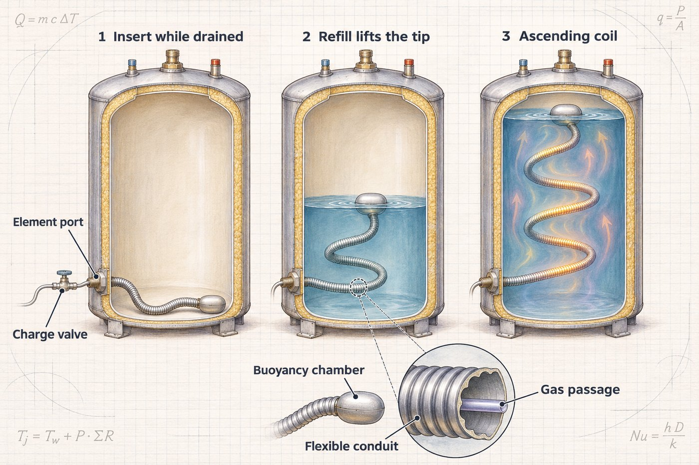
8.3 Dry-well sleeve
Computing hardware ages faster than a water tank. In the dry-well variant the enclosure is a sleeve, closed at the far end and open only through a bore in the fitting. The sleeve, not the electronics, is the pressure boundary, and it stays in the tank permanently. The boards ride on a cartridge that slides in and out of the sleeve while the tank is full and under pressure. The tank is drained once, when the sleeve is fitted, and never again for service or upgrade. Thermal contact between cartridge and sleeve is made by sprung pads or wedges, a conformable interface material or a small charge of dielectric liquid. In the terms of Section 6 this is the coupling resistance, and it is the component on which a dry-well design will succeed or fail.
8.4 Forced circulation
A small impeller carried by the module, either magnetically coupled through the wall or a wet-rotor pump of the kind used in potable circulators, moves tank water over the enclosure. In the model a flow of 0.3 m/s roughly triples the water-side coefficient. With good coupling this adds 15 to 20% to the allowable power of a rigid module (Table 4) for a parasitic draw of a few watts, and it reduces stratification around the module.
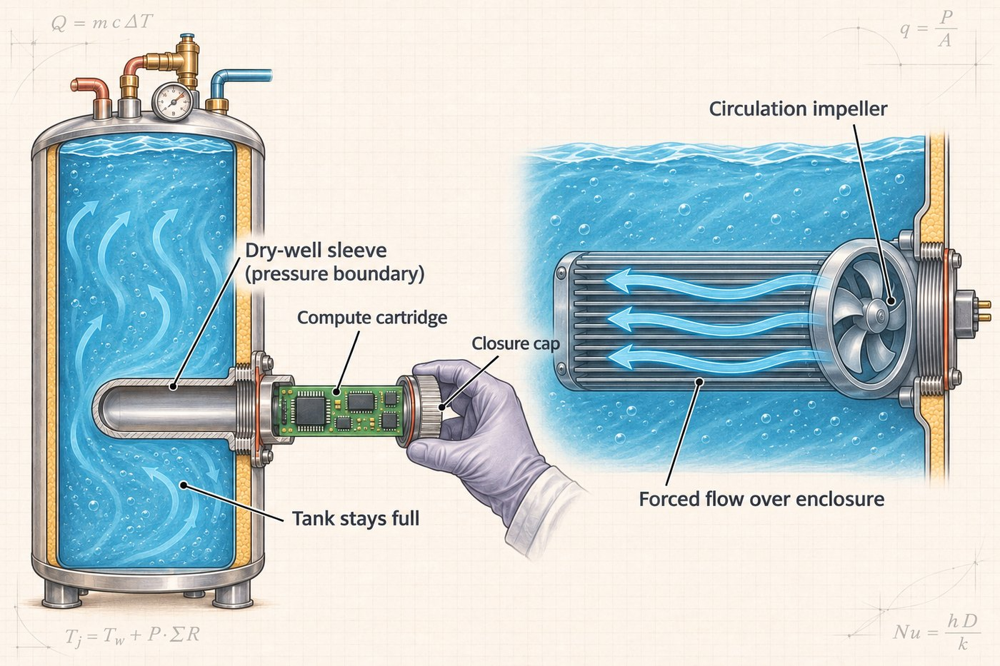
The variants combine. A flexible dry-well sleeve can be installed empty, where it is strongly buoyant and deploys itself on refill, and loaded afterwards with a chain of cartridges through the fitting.
9. Building-scale systems
The household case is the hardest one for the economics, because one tank supports one small module. A multi-dwelling building is different in two ways. Its central plant has large storage vessels with several element ports each, and its recirculation loop loses heat all day and all year, which presents a nearly continuous load.
In the building system (Figure 9) a bank of modules occupies the element ports of the storage vessels, and optionally of a side-arm vessel plumbed into the recirculation loop, which adds ports without regard to how many the main vessels have. A fleet controller allocates work among the modules, reduces the work of any module whose vessel interlock opens, and calls on the building's existing boiler for whatever the modules cannot supply:
The legacy appliance becomes the peaking plant. The controller may also accept a grid signal and shed compute load for a period, letting the stored hot water carry the building. That behaviour is subordinate to the thermostat interlocks.
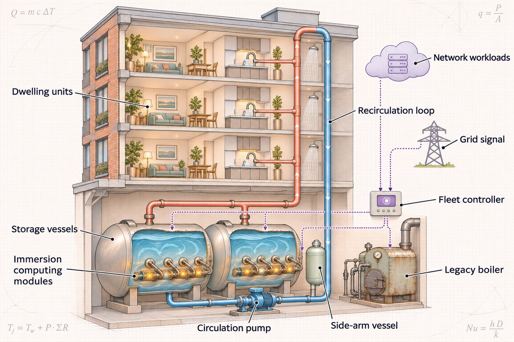
9.1 Heat-pump coupling
Computation delivers heat at moderate temperature. Where a higher temperature is needed, a heat pump can take the module-heated liquid as its source. The ideal coefficient of performance for delivery at absolute temperature Th from a source at Tc is
For delivery at 65 °C, a source at 10 °C gives an ideal value of 6.1, and a source at 35 °C gives 11.3. Real machines reach a fraction of the ideal, but the ratio shows the direction: raising the source temperature with computational heat nearly halves the lift the heat pump has to provide.
9.2 Steam plants
Many older apartment buildings are heated by steam. Modules cannot make steam, but they can preheat boiler feedwater or returning condensate in a feedwater or side-arm vessel. Each unit of computational heat Qc delivered to the feedwater displaces fuel of
where ηboiler is the boiler efficiency.
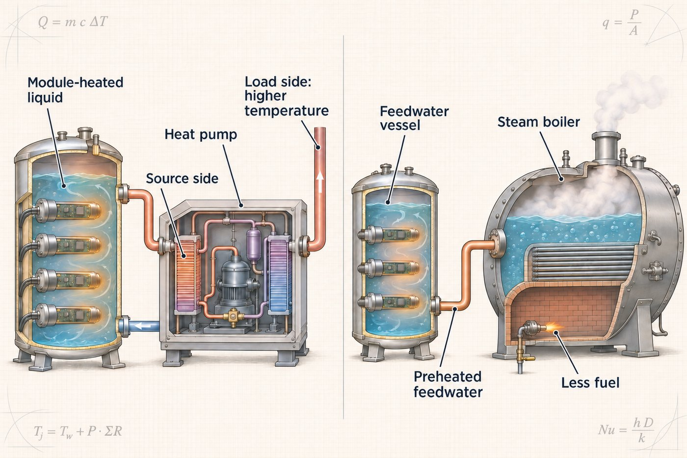
10. Safety and compliance
The module's safety case rests on changing as little as possible.
Existing protections stay. The thermostat, the manual-reset high-limit cutoff and the temperature-and-pressure relief valve remain in service, unaltered, and keep their supervisory roles. The module presents itself electrically as an element of its rated power.
Lower surface temperature. At 6 to 20 W/in² the enclosure runs far cooler than a conventional sheath at 150 to 350 W/in². Scale forms fastest on hot surfaces, so a cooler surface is expected to accumulate less. This is a prediction to be tested, not a result.
Two barriers. In potable applications at least two sealed barriers, the enclosure wall and the feedthrough, separate any dielectric medium from the water. A moisture sensor inside the enclosure stops the dies and raises an alert on ingress.
Pathogen control. A source that holds water at moderate temperature for long periods must not create a hygiene risk. The sanitize mode of Section 7 exists for this reason, and any deployment would need to follow the building's water management plan [15].
Certification. A product would need listing under the standards that apply to water-heater elements and to heat-producing information-technology equipment [16, 17]. No such listing has been sought yet.
11. The economics in one equation
A resistive element buys heat at the price of electricity, ce per kilowatt-hour. A computing module buys the same heat and also sells the computation. If the work earns rc per kilowatt-hour consumed, net of hardware wear and network costs, the net cost of heat is
and the annual value of a module of power P running a fraction d of the year is 8,760 P d rc. Two things follow without assuming any price. The value is proportional to the duty d, which is why Section 5 matters: at a duty of 10% the same hardware would earn a tenth as much. And the module never makes heat more expensive than a resistive element as long as rc is positive, because the heat delivered per kilowatt-hour is the same.
We deliberately give no figure for rc. It varies by more than a hundredfold between kinds of work and changes from month to month. Whether a given workload can tolerate an interruptible host with a residential network connection is an open question that belongs to the evaluation.
12. Limitations and evaluation plan
This is a design and analysis paper. Its limits should be plain.
No measurements. No module has been built and run in a tank. The thermal results rest on correlations and assumed coefficients.
The coupling is assumed. The contact conductance in the conduction case carries the whole result. A value half as large would cut the allowable power substantially.
Fin performance is idealised. Fins that must pass a one-inch bore are short, and their real area gain may be below the factor of 2.5 used here.
Tank flow is simplified. The model treats the water as a uniform bath. Real tanks stratify, and a horizontal source low in the tank drives its own circulation.
Reliability is unknown. Electronics held at 80 to 100 °C for years, in a sealed tube, in a pressure vessel, is a demanding service.
The tests that would settle these, in order of cost:
| Stage | Test | Question answered |
|---|---|---|
| 1. Bench | Instrumented module in an open, unpressurised bath at fixed temperature | What are the real coupling and water-side resistances? Does Table 4 hold? |
| 2. Tank | Module in a standard 50-gallon heater on a programmed draw profile | What duty and share of heat are achieved? How long is recovery with and without the auxiliary element? |
| 3. Pressure and leak | Hydrostatic test of enclosure and feedthrough; ingress detection test | Does the pressure boundary hold? Does the moisture sensor trip in time? |
| 4. Scale | Matched tanks on hard water, module against conventional element | Does low watt density reduce scale as predicted? |
| 5. Deployment | Flexible conduit in a transparent tank, repeated refills | Does buoyant deployment place the coil reliably and clear of the dip tube and anode? |
| 6. Field | Small bank in a multifamily plant with fleet control | What is the year-round duty? How often is the boiler called? |
13. Conclusion
The heating-element port is the one place in an installed water heater that was built to accept an electric heat source in the water. Packaging a computer to fit it removes the main obstacle that earlier heat-reuse schemes ran into, which is the need to change the building.
The port's small size limits the module to a few hundred watts, and that limit is what makes the idea work: it matches the average load of a household, so the module can run for most of the day. The first thermal model says the limit is set inside the tube, at the coupling between dies and wall, and that conduction coupling is needed to reach useful power. A flexible conduit scales the same design to kilowatts through the same opening, a dry-well sleeve makes the hardware serviceable without draining, and a resistive partner on the same fitting restores everything computation cannot do.
What remains is to build one and measure it.
References
- A. Shehabi et al., 2024 United States Data Center Energy Usage Report, Lawrence Berkeley National Laboratory, LBNL-2001637, 2024.
- K. Ebrahimi, G. F. Jones and A. S. Fleischer, "A review of data center cooling technology, operating conditions and the corresponding low-grade waste heat recovery opportunities," Renewable and Sustainable Energy Reviews, vol. 31, pp. 622–638, 2014.
- U.S. Department of Energy, Energy Saver, "Water Heating," energy.gov.
- M. Wahlroos, M. Pärssinen, J. Manner and S. Syri, "Utilizing data center waste heat in district heating: impacts on energy efficiency and prospects for low-temperature district heating networks," Energy, vol. 140, pp. 1228–1238, 2017.
- J. Liu, M. Goraczko, S. James, C. Belady, J. Lu and K. Whitehouse, "The data furnace: heating up with cloud computing," in Proc. 3rd USENIX Workshop on Hot Topics in Cloud Computing (HotCloud), 2011.
- U.S. Patent 11,974,412 (Hunt Energy), processors in dielectric liquid for heating domestic hot water, granted 2024.
- U.S. Patent Application Publication 2022/0214727 (Positive Degree), dielectric-filled vessel with compute boards inside a water tank.
- U.K. Patent GB 2,576,035 (Heata), compute unit thermally bonded to the exterior of a hot-water cylinder.
- U.S. Patent 9,516,791 (Iceotope), sealed liquid-filled module for electronic components.
- U.S. Patent 9,518,759 (Butler), screw-in retrofit water-heater element with associated electronics.
- U.S. Patent 6,539,171 (Watlow), flexible spiral heating element insertable through a standard port.
- S. W. Churchill and H. H. S. Chu, "Correlating equations for laminar and turbulent free convection from a horizontal cylinder," International Journal of Heat and Mass Transfer, vol. 18, pp. 1049–1053, 1975.
- S. W. Churchill and M. Bernstein, "A correlating equation for forced convection from gases and liquids to a circular cylinder in crossflow," Journal of Heat Transfer, vol. 99, pp. 300–306, 1977.
- T. L. Bergman, A. S. Lavine, F. P. Incropera and D. P. DeWitt, Fundamentals of Heat and Mass Transfer, 7th ed., Wiley, 2011.
- ASHRAE, Guideline 12-2020: Managing the Risk of Legionellosis Associated with Building Water Systems, 2020.
- UL 174, Standard for Household Electric Storage Tank Water Heaters, and UL 1030, Standard for Sheathed Heating Elements.
- UL 62368-1, Audio/Video, Information and Communication Technology Equipment, Part 1: Safety Requirements.
How to cite
B. Goldstein, "The Heating Element That Computes: An Immersion Computing Module for the Standard Water-Heater Element Port," Benny Labs Foundation working paper, November 2026. https://doi.org/10.5281/zenodo.24540970